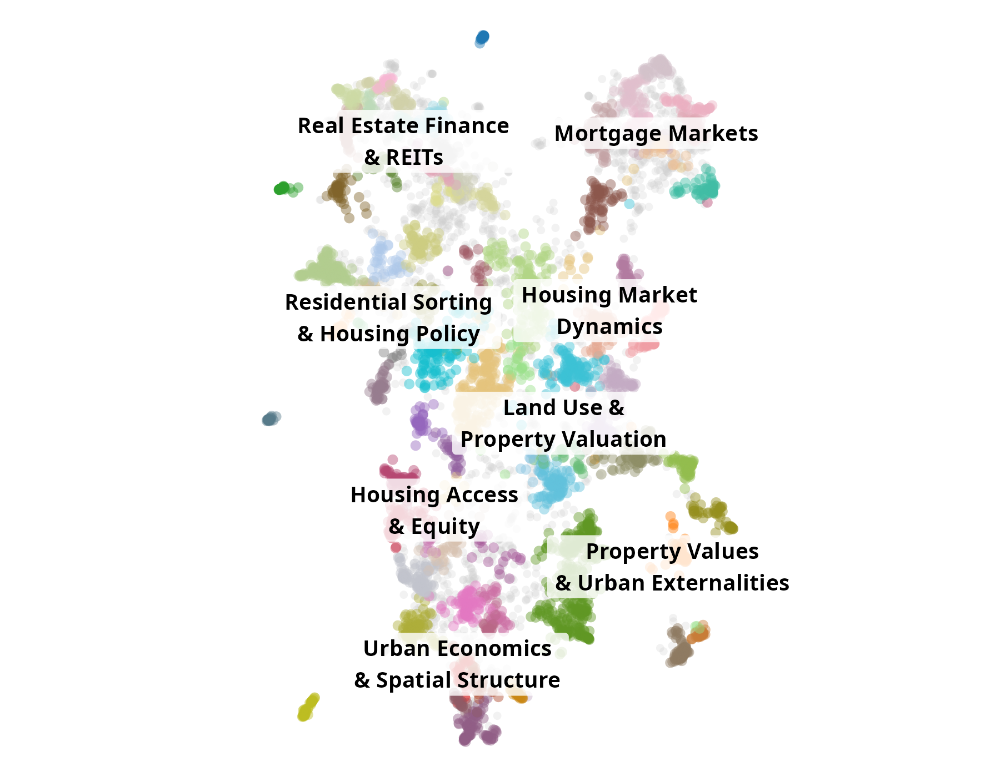
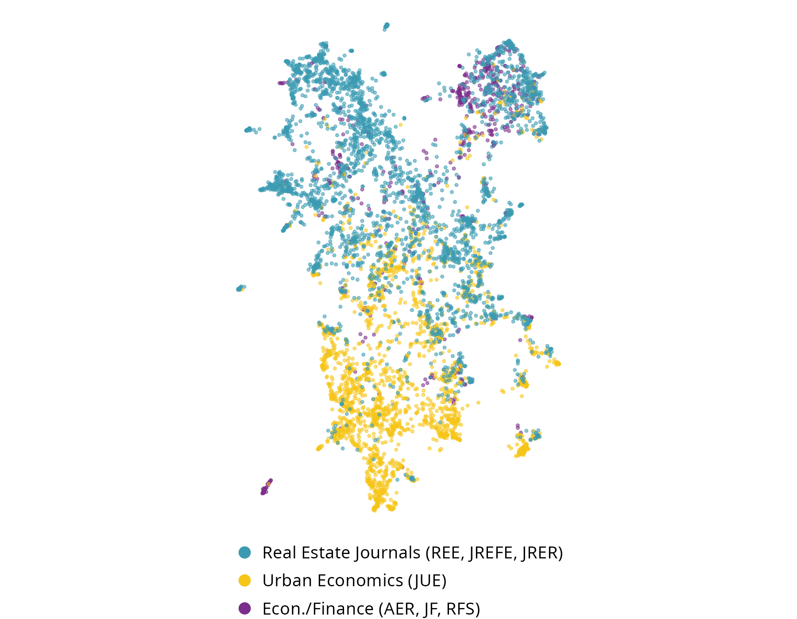

REF Preweek 2026
Real Estate & Technology
Professor Thies Lindenthal
htl24@cam.ac.uk
Photo: “Google Data Centre, Council Bluffs, Iowa” by Chad Davis
The graduate premium is cracking
Even as fewer school-leavers go to university, the wage return to a degree is falling
Moving up the value chain…
Am I still useful in the research process? Does a human competitive edge remain?
Comparison of Core Research Competencies (my self-perception)
AI is already writing our papers
LLM-indicator word rates in real estate and housing research, 2010–2025
Mapping the research space
Real estate, urban economics and econ/finance papers, embedded by research question, method and finding

(a) Research clusters
(b) Journal of publication
Where do AI-generated ideas land?
Naive prompt: no corpus, the model's training priors only (200 ideas)
Feeding the model our literature
Same prompt, with the Real Estate Economics corpus prepended (200 ideas)
Transfer from econ/finance
Ideas that move econ/finance methods into real estate questions (200 ideas)
Which papers will LLMs cite?
1,162 papers recalled for the 200 naive ideas, sized by how many ideas cite them
Real Estate Economics ranks ninth
Top 10 journals recalled by the LLM for real-estate research ideas
| Journal | Citation instances | Unique papers |
|---|
| American Economic Review | 154 | 70 |
| Journal of Political Economy | 115 | 29 |
| Review of Financial Studies | 110 | 52 |
| Journal of Urban Economics | 108 | 60 |
| Quarterly Journal of Economics | 96 | 45 |
| Journal of Econometrics | 82 | 7 |
| Journal of Financial Economics | 81 | 40 |
| Journal of Finance | 68 | 44 |
| Real Estate Economics | 58 | 39 |
| Journal of Public Economics | 43 | 18 |